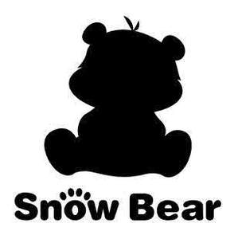

Trade Mark Journal No.2025/010 7 March 2025
UK00004136350 12 December 2024 (7,8,10,11,21)

- Class 7
- Disintegrators; Hair clipping machines for animals; Mixing machines; pasta making machines, electric; Peeling machines; Food preparation machines, electromechanical; Noodle making machines; Beverage preparation machines, electromechanical; Kitchen machines, electric; Food processors, electric; juice extractors, electric; Whisks, electric, for household purposes; Coffee grinders, other than hand-operated; Can openers, electric; Washing machines [laundry]; Portable ultrasonic washing devices for laundry; Rinsing machines; Hand-held tools, other than hand-operated; Machines and apparatus for cleaning, electric; Vacuum cleaners; Mills for household purposes, other than hand-operated; Washing apparatus; Dishwashers; Ironing machines; Waste disposal units; Wringing machines for laundry; Meat choppers, electric; Blenders, electric, for household purposes.
- Class 8
- Hand tools, hand-operated; Beard clippers; Hand implements for hair curling; Fingernail polishers, electric or non-electric; Depilation appliances, electric and non-electric; Eyelash curlers; Hair clippers for personal use, electric and non-electric; hair braiders, electric; Manicure sets, electric; Curling tongs; Cutting tools [hand tools]; Clothes irons; Scissors; Multi-tool knives; Food processors, hand-operated; kitchen mandolines; Can openers, non-electric; table knives,forks and spoons for babies; laser hair removal apparatus, other than for medical purposes; fruit segmenters; Hair clippers for animals [hand instruments].
- Class 10
- Massage apparatus; Thermometers for medical purposes; Microdermabrasion apparatus for medical or therapeutic purposes; Nasal aspirators; Electric massage guns; Heart rate monitoring apparatus; Lasers for medical purposes; LED masks for therapeutic purposes; Facial aesthetic treatment apparatus using ultrasonic waves; LED facial aesthetic treatment apparatus; Childbirth mattresses; Ear picks; Abdominal pads; Sanitary masks; Disposable steam-heated masks for therapeutic purposes; Portable earpicks with endoscopy function; Teething rings; Babies' bottles; Breast pumps; dummies for babies; Feeding bottle teats; baby feeding dummies; gum massagers for babies; Abdominal belts; Maternity belts; Elastic stockings for surgical purposes; Corsets for medical purposes; Vaginal syringes; Apparatus, devices and articles for nursing infants; Arterial blood pressure measuring apparatus; Nasal irrigators, electric; Nasal irrigators, non-electric; Breast milk storage bottles; nipple shields for breastfeeding.
- Class 11
- Lamps; Germicidal lamps for purifying air; nail lamps; Curling lamps; Heaters, electric, for feeding bottles; Cooking utensils, electric; Roasting apparatus; Waffle irons, electric; Coffee machines, electric; Kettles, electric; multicookers; Bread-making machines; air fryers; Electrically heated mugs; Cooling installations and machines; Air conditioning installations; Electric fans for personal use; Laundry dryers, electric; Fabric steamers; humidifiers; Hair driers; Desiccating apparatus; Steam facial apparatus [saunas]; Electric warmers for baby wet wipes; Sterilizers; Water purifying apparatus and machines; Water dispensers; Radiators, electric; Pocket warmers; Electric appliances for making yogurt; Air purifying apparatus and machines.
- Class 21
- Containers for household or kitchen use; Bowls [basins]; Cups; Tableware, other than knives, forks and spoons; Jugs; Table plates; Blenders, non-electric, for household purposes; Kitchen utensils; Drinking vessels; Coffee grinders, hand-operated; Coffee services (tableware); Baby baths, portable; Combs; Brushes; Toothbrushes, electric; Water apparatus for cleaning teeth and gums; Floss for dental purposes; Thermally insulated containers for food; Isothermic bags; Vacuum bottles; Heat-insulated containers; Cleaning instruments, hand-operated; pet feeding bowls; plug-in diffusers for mosquito repellents.
Snow Bear (Shanghai) Maternity And Child Articles Co., Ltd.
Representative: Haseltine Lake Kempner LLP